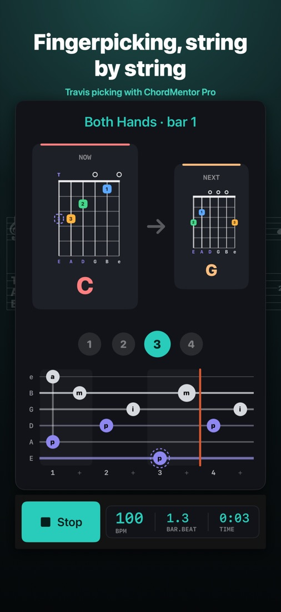
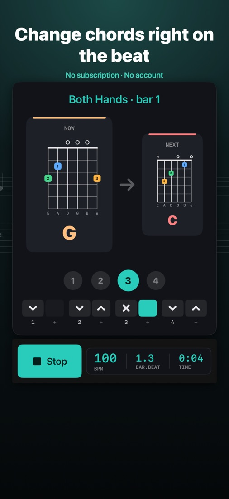
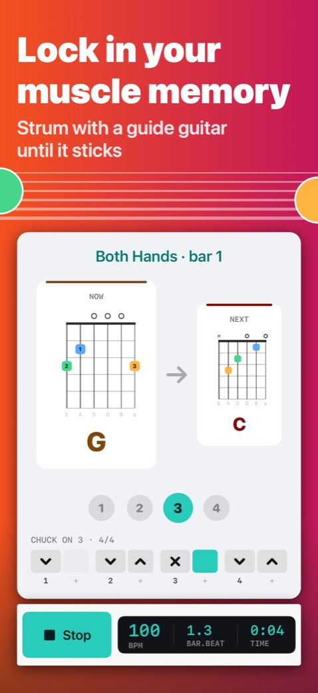
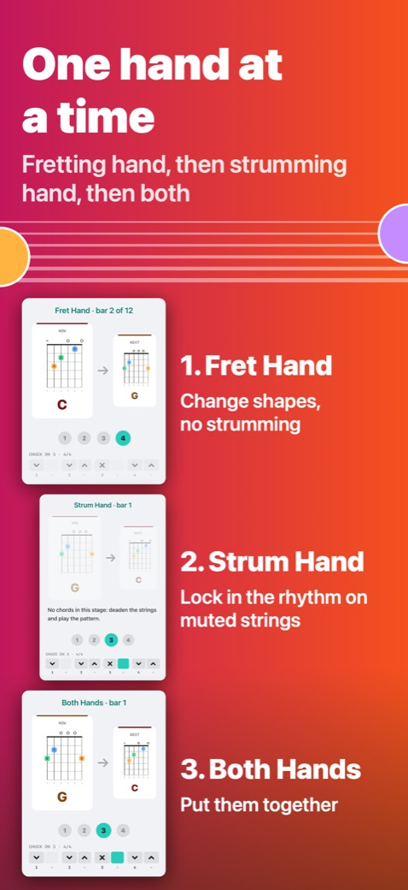
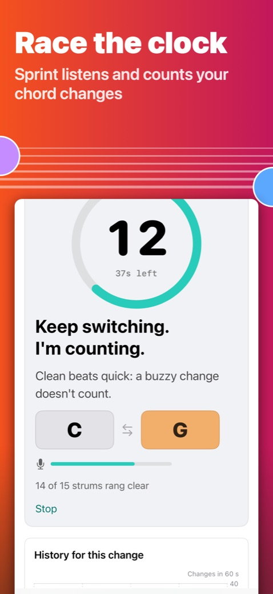
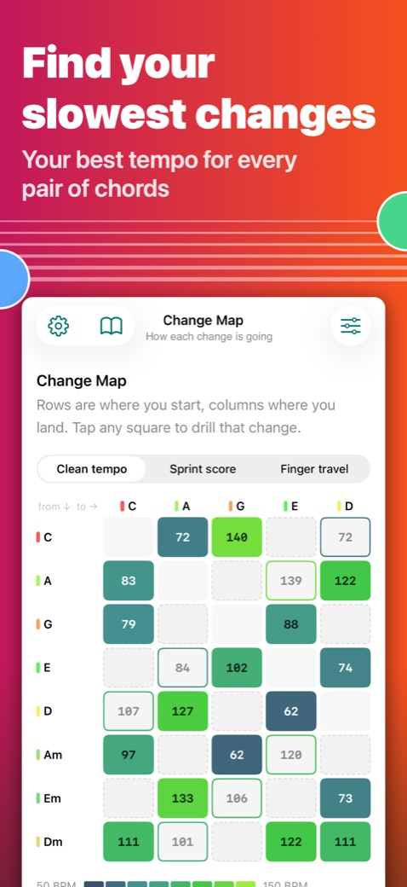
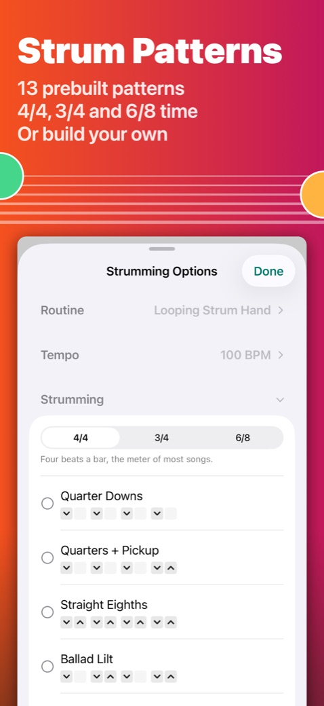
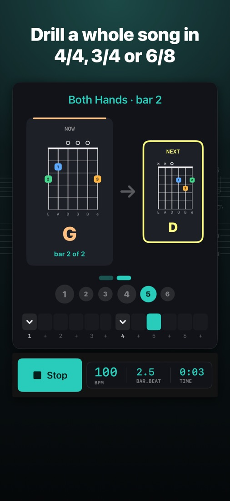
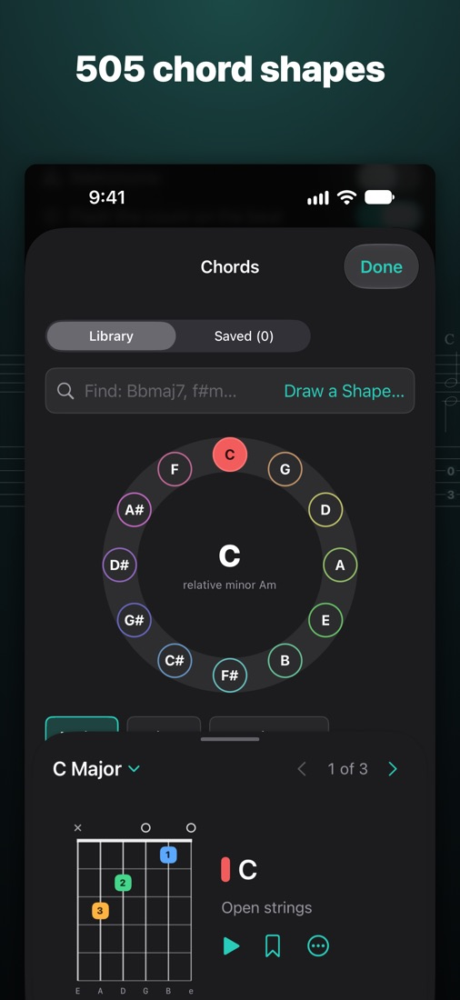
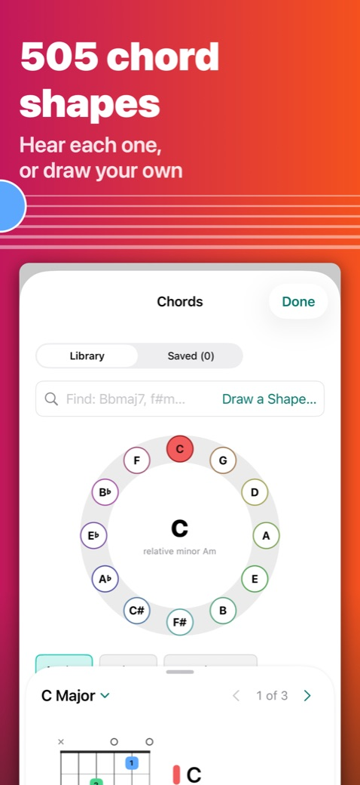

Hear it
Turn the sound on. The Acoustic and Classical guide guitars are my own recordings, string by string: a cedar-top acoustic and a nylon-string classical.
Fingerpicking, string by string
27 prebuilt picking patterns in Arpeggio, Travis, Pinch and Carter styles, drawn like tab: each note on its string, the thumb and fingers in their own colors. Or build your own on a grid.
Strum with a guide guitar
13 prebuilt strum patterns in 4/4, 3/4 and 6/8, from Quarter Downs to syncopated, or build your own. The guide guitar plays along at the tempo you set.
One hand at a time, then both
Fret Hand changes shapes in silence. Strum Hand locks in the rhythm on muted strings. Both Hands puts them together, and the tempo can climb as you go.
Race the clock
Sprint listens through the microphone and counts how many times you change chords in a minute. Nothing is recorded.
Find your slowest changes
The Change Map shows your best clean tempo for every pair of chords you practice, so you know what to work on next.
505 chord shapes
Browse every common chord around the circle of fifths, hear each voicing, save your favorites, or draw your own.
Free to use. Pro is a one-time purchase.
Every screen and routine, every strum and picking pattern, and all 505 chord shapes are free. No account, no ads, no tracking.
Free
- Every screen, routine and pattern
- All 505 chord shapes
- 3 saved drills, up to 15 chords each
- 1 strum pattern and 1 picking pattern of your own
- 3 chords you draw
- 15 shapes in a Shuffle deck
ChordMentor Pro
$4.99 Free for early adopters
- Pattern changes partway through a drill, the way a song goes from verse to chorus
- No limits: drills, chords, patterns of your own, drawn chords and Shuffle decks
- On your iPhone, iPad and Mac with one Apple Account
- Yours to keep: a one-time purchase
Black Friday deal for early adopters: download ChordMentor by December 15 and Pro is yours to keep. After that, Pro is $4.99 (U.S. price), once.